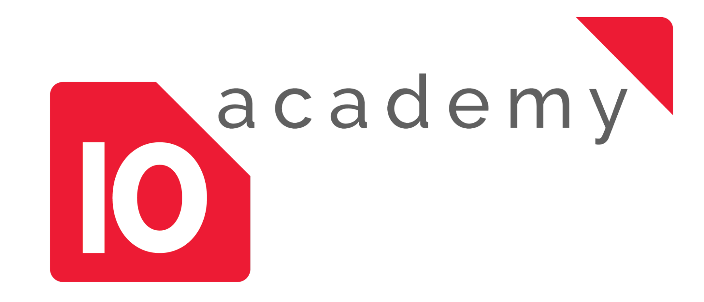

Certification and Portfolio
Overview
The Certification and Portfolio feature in the 10 Academy platform (Tenx) empowers trainees to build and manage their professional profiles, showcase their achievements, and download official training certificates. This feature is designed to help trainees create a compelling CV, highlight their projects, and document their learning journey effectively.
Key Features
1. Build and Customize Your CV
Trainees can create an initial CV by customizing various sections to reflect their skills, experiences, and achievements. Key sections include:
- Basic Information: Add personal details such as name, email, phone number, and date of birth.
- Professional Summary: Write a concise summary of your skills and career goals.
- Work Experience: Document your professional experience, including roles, duration, and key responsibilities.
- Education: List your academic background, including degrees and institutions.
- Projects: Highlight projects completed during training, with details such as project title, duration, focus area, and description.
- Skills: Showcase technical and professional skills relevant to your field.
- External Links: Add links to professional profiles (e.g., LinkedIn, GitHub) to enhance your portfolio.
Steps to Customize Your CV:
- Navigate to the Profile section from the main dashboard.
- Under Basic Information, input your personal details (e.g., name, email, phone number).
- Add sections for Professional Summary, Work Experience, Education, Projects, and Skills by filling in the relevant fields.
- Include External Links to professional profiles or portfolios (e.g., LinkedIn, GitHub).
- Save your changes by clicking the Update button.
Example:
A trainee, David Rukundo, customized his CV with the following details (as shown in Screenshot):
- Professional Summary: "Highly motivated Generative AI Engineer with a solid foundation in software engineering and specialized expertise in developing and deploying advanced AI solutions."
- Work Experience: Generative AI, Machine Learning, Data Engineer Trainee at 10 Academy (30 Jun 2024 – 30 Dec 2024).
- Projects: "Contract Analysis RAG: A Retrieval-Augmented Generation (RAG) system for legal Q&A."
- Skills: Python, JavaScript, Django, Machine Learning, Deep Learning.
- External Links: LinkedIn and GitHub profiles.

Caption: Screenshot - Overview of David Rukundo's customized CV, showcasing sections like Professional Summary, Work Experience, Education, Skills, and Projects.
2. Choose and Preview CV Templates
Trainees can select from multiple CV templates to present their information professionally. Two templates are currently available: Classic and Modern.
Steps to Choose a Template:
- From the Profile section, click on Select Resume Template.
- Preview the Classic and Modern templates side by side.
- Select your preferred template and click Save.
- Download or share your CV as a PDF.
Example Templates (as shown in Screenshot):
- Classic Template: A traditional layout with a clean, professional design.
- Modern Template: A visually appealing layout with a focus on skills and projects, suitable for tech roles.

Caption: Screenshot - Preview of the Classic and Modern CV templates available for selection.
Preview of a Generated CV:
Once a template is selected, the CV can be previewed and downloaded as a PDF. An example of a generated CV using the Classic template is shown in Screenshot.

Caption: Screenshot - A generated CV in the Classic template format for David Rukundo, including all customized sections.
3. Manage Projects in Your Portfolio
The Projects section allows trainees to document and showcase their work during the training program. Each project entry includes details such as title, URL, duration, focus area, and description.
Steps to Add a Project:
- In the Profile section, scroll to the Projects area.
- Click Edit Project to add a new project.
- Fill in the following fields:
- Title: Name of the project (e.g., "Contract Analysis RAG").
- URL: Link to the project (e.g., http://www.example.com).
- Duration: Start and end dates (e.g., 31 Jul 2024 – 31 Jul 2024).
- Focus Area: Main area of work (e.g., Medical Image Analysis).
- Description: A brief overview of the project.
- Toggle the Still Working On option if the project is ongoing.
- Click Update to save the project.
Example Project Entry (as shown in Screenshot 1):
- Title: Contract Analysis RAG: A Retrieval-Augmented Generation (RAG) Approach for Legal Q&A
- Duration: 31 Jul 2024 – 31 Jul 2024
- Focus Area: Medical Image Analysis
- Description: "Developed a backend function for a Retrieval-Augmented Generation (RAG) system, enhancing contract analysis efficiency. Collaborated with a team to implement semantic search techniques, significantly improving accuracy in legal query responses."

Caption: Screenshot - The "Edit Project" interface, showing how to add a new project with details like Title, URL, Duration, Focus Area, and Description.
4. Download Your Official Training Certificate
Trainees can access and download their official training certificates from the Achievements section after completing a module.
Steps to Download a Certificate:
- Navigate to the Profile section and click on the Achievements tab.
- Locate the certificate for the completed module (e.g., "Module 1 of Machine Learning Engineering, Generative AI Engineering, Web3 Engineering Training").
- Click on the certificate to view it.
- Download the certificate as a PDF by clicking the download icon.
Example Certificate (as shown in Screenshot):
- Recipient: David Rukundo
- Module: Module 1 of Machine Learning Engineering, Generative AI Engineering, Web3 Engineering Training
- Date: February 7, 2025
- Signatories: Dr. Yabekel Fantaye (Co-founder) and Arun Sharma (Co-founder)

Caption: Screenshot - An official training certificate for David Rukundo, awarded upon completion of Module 1.
Benefits of the Certification and Portfolio
- Professional Growth: Build a professional CV that highlights your skills, projects, and achievements.
- Showcase Achievements: Display your official training certificates to validate your learning journey.
- Customization: Tailor your CV to suit your career goals with flexible templates and editable sections.
- Portfolio Building: Document and share your projects to demonstrate hands-on experience to potential employers.